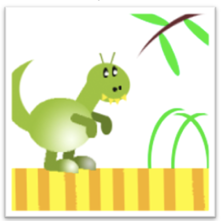

← Вернуться к заданиям
Пример рисунка, который должен получиться
Практическая работа №2. Рисунок CSS
Создание рисунка средствами стилевой таблицы CSS.
Задание
Необходимо создать рисунок по шаблону с помощью средств стилевой таблицы CSS.

Результат
Итогом работы является рисунок динозавра, созданный с помощью CSS.